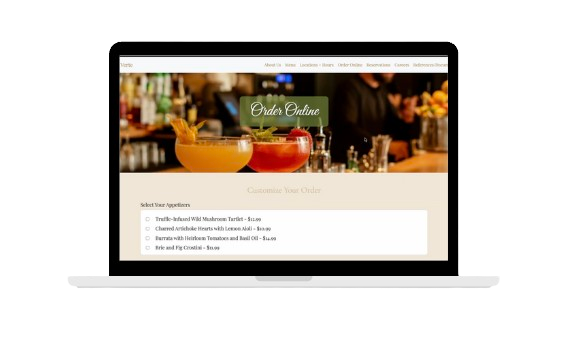
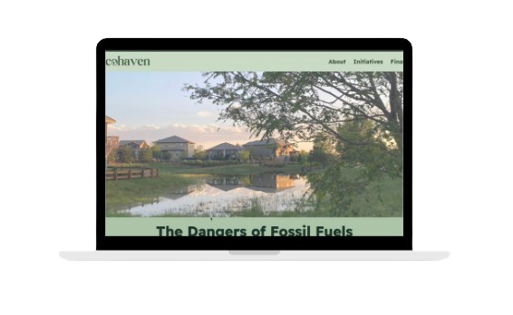
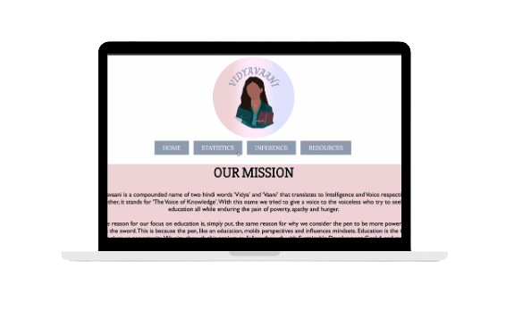
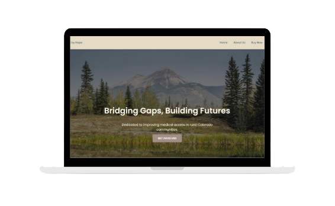
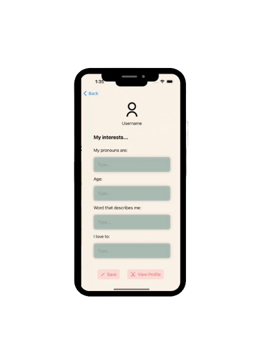

SOFTWARE PROJECTS

Vegan Restaurant

Sustainable Energy Housing

Women's Education Awareness

Rural Healthcare Nonprofit

Self-Discovery App
Currently in Development
For the Unseen
Current Project. Redesigning and developing the website for For the Unseen, a storytelling initiative by the SAFE nonprofit that raises awareness about the addiction fatality epidemic through personal stories and advocacy.